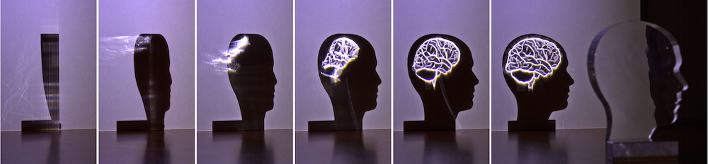

We present a new algorithm for computational caustic design. Our algorithm solves for the shape of a transparent object such that the re- fracted light paints a desired caustic image on a receiver screen. We introduce an optimal transport formulation to establish a correspon- dence between the input geometry and the unknown target shape. A subsequent 3D optimization based on an adaptive discretization scheme then finds the target surface from the correspondence map. Our approach supports piecewise smooth surfaces and non-bijective mappings, which eliminates a number of shortcomings of previous methods. This leads to a significantly richer space of caustic images, including smooth transitions, singularities of infinite light density, and completely black areas. We demonstrate the effectiveness of our approach with several simulated and fabricated examples.
Note: © Authors 2014. This is the author's version of the work. It is posted here for your personal use. Not for redistribution. The definitive Version of Record was published in ACM Trans. Graphics Vol. 33, Issue 4, July 2014, http://dx.doi.org/10.1145/2601097.2601200.
@article{Schwartzburg14,
author = {Schwartzburg, Yuliy and Testuz, Romain and Tagliasacchi, Andrea and Pauly, Mark},
title = {High-contrast Computational Caustic Design},
journal = {ACM Trans. Graph.},
note = "{P}roc. SIGGRAPH 2014",
issue_date = {July 2014},
volume = {33},
number = {4},
month = jul,
year = {2014},
issn = {0730-0301},
pages = {74:1--74:11},
articleno = {74},
numpages = {11},
url = {http://doi.acm.org/10.1145/2601097.2601200},
doi = {10.1145/2601097.2601200},
acmid = {2601200},
publisher = {ACM},
address = {New York, NY, USA}
}